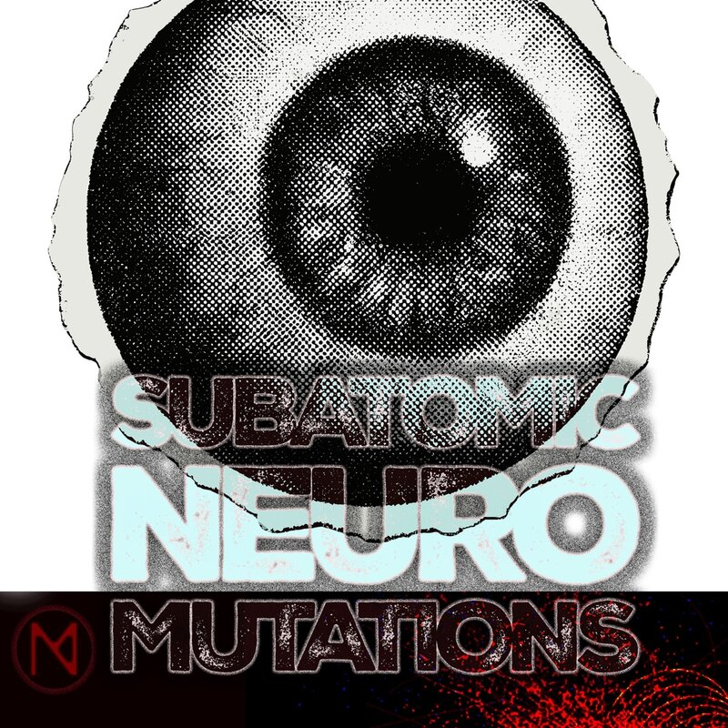
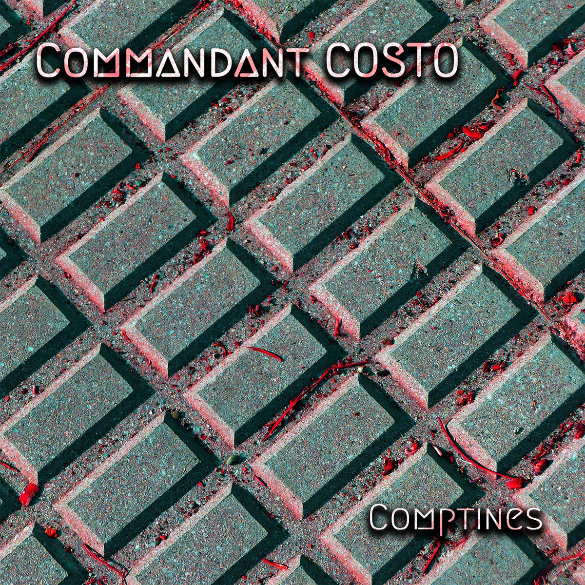

Music
Releases
Records across three projects : Y'n'N, Commandant Costo and E-Core. Press play up top to hear four tracks from H2O2 right here on the site.
Y'n'N / H2O2 : Subatomic Neuro X-tracts

Out now: H2O2 — Subatomic Neuro X-tracts
The album by the Y'n'N duo (Olivier Doaré & Hugues Delacroix) has been mastered by massivebass.tv and released worldwide by Warner Chappell PM Germany (WCPM Germany). Listen on all major platforms below.
The album by the Y'n'N duo (Olivier Doaré & Hugues Delacroix) has been mastered by massivebass.tv and released worldwide by Warner Chappell PM Germany (WCPM Germany). Listen on all major platforms below.
Listen and stream online:
Y'n'N / H2O2 : Subatomic Neuro Mutations

The album by the Y'n'N duo (Olivier Doaré & Hugues Delacroix), remastered by massivebass.tv and released worldwide by Warner Chappell PM Germany (WCPM Germany). Preview tracks in the header playbar up top.
Commandant Costo / Comptines

Comptines, by Commandant Costo.